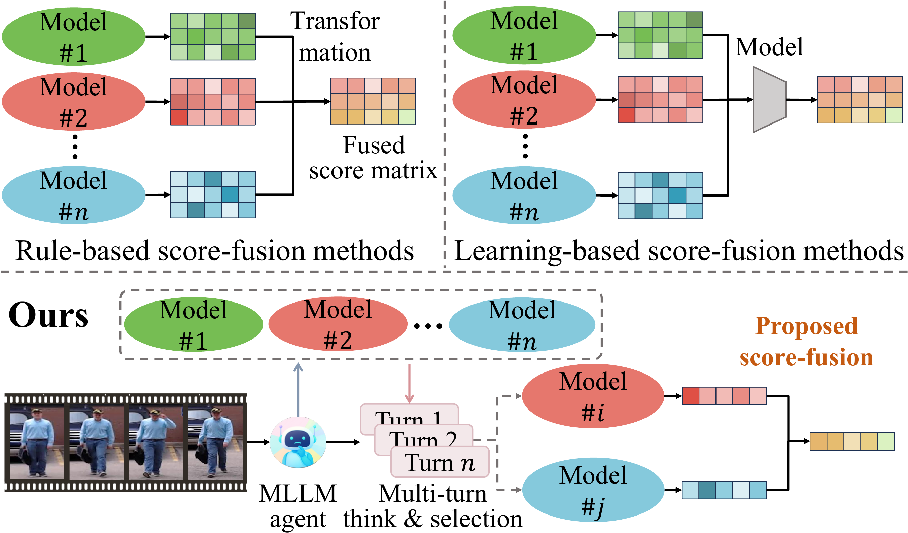
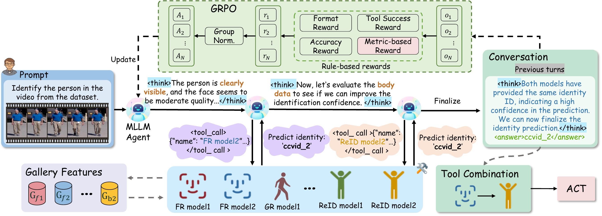
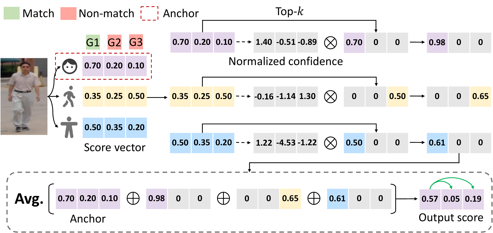
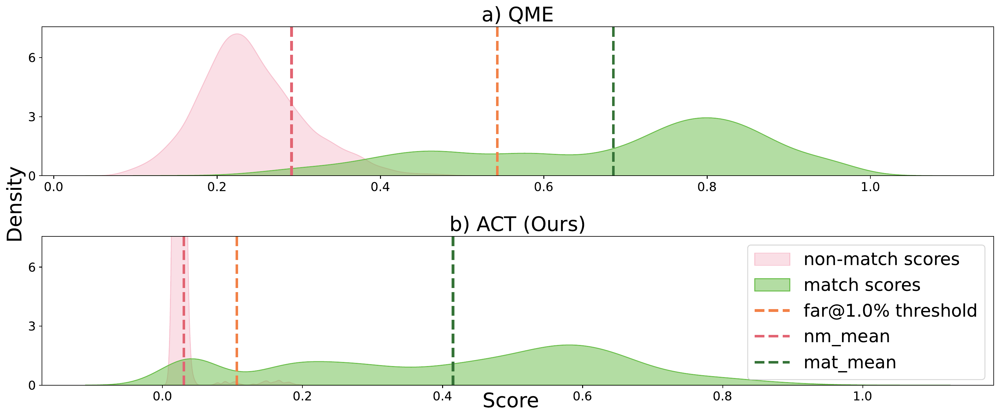
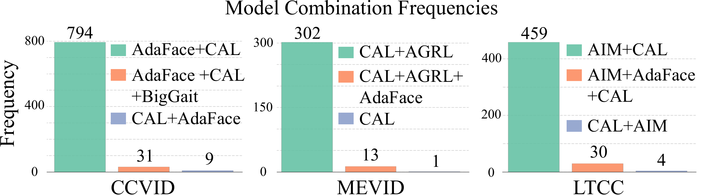
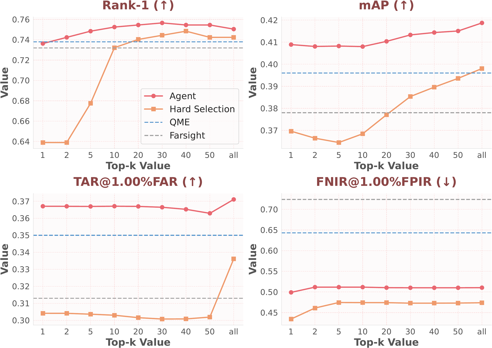

Existing whole-body human recognition systems usually fuse face, gait, and body models with a fixed strategy for all samples. This static design is inefficient and can hurt accuracy when some modalities are unreliable (e.g., missing face cues in back-view videos).
We propose FusionAgent, an MLLM-based framework that dynamically selects model subsets per sample and fuses their outputs with Anchor-based Confidence Top-k (ACT) score fusion. Trained with reinforcement fine-tuning under Group Relative Policy Optimization (GRPO) and a metric-based reward, FusionAgent learns explainable, sample-specific model selection without requiring ground-truth reasoning traces or exhaustive search over model combinations.
Across CCVID, LTCC, and MEVID, FusionAgent consistently improves open-set search and verification performance, while also providing a practical trade-off between interpretability and speed through Chain-of-Thought (CoT) and Direct Answering (DA) inference modes.
Existing score-fusion methods — both rule-based and learning-based — assume that all models provide complementary information, treating the model combination as fixed for every input. This can be suboptimal: for instance, when a video only captures the back view of a person, incorporating face recognition models would be inappropriate and may even degrade performance.
FusionAgent addresses this by leveraging an MLLM agent to dynamically select a subset of models per sample, followed by adaptive score fusion, enabling robust integration tailored to each input.

The FusionAgent framework consists of two core components: (1) an MLLM-based agent that performs multi-turn reasoning and dynamic model selection using a ReAct-style controller, and (2) the ACT score-fusion algorithm that robustly integrates outputs from the selected models. The agent is trained via Group Relative Policy Optimization (GRPO) with four reward functions: format reward, tool success reward, answer accuracy reward, and a novel metric-based reward.
For each query, the agent first analyzes the biometric evidence and selects an initial model. Each tool returns both a predicted identity and an internal score vector over the gallery; the score vector is retained for fusion, while the predicted identity is exposed to the agent for subsequent reasoning. The agent can then continue invoking tools or terminate with a final answer and reasoning summary, yielding transparent, traceable decisions.

ACT dynamically combines scores from multiple models by leveraging a stable anchor model (the first model selected by the agent) to provide a robust score vector, while selectively incorporating normalized, high-confidence scores from complementary models. The anchor model provides a global ranking structure, while selected models offer sparse, localized refinements only for their top-k predictions.
This design reduces the misalignment introduced by heterogeneous embeddings and sample-wise model selection. In practice, ACT is especially effective for difficult verification and open-set search settings, where suppressing noisy non-match scores is as important as improving the top match.

FusionAgent is evaluated on three challenging whole-body biometric benchmarks: CCVID, LTCC, and MEVID. The results consistently demonstrate superior performance across all metrics, especially in verification (TAR@FAR) and open-set search (FNIR@FPIR).
Compared with statistical fusion baselines and the quality-aware fusion method QME, FusionAgent achieves the most consistent gains in FNIR, showing that adaptive model selection is particularly beneficial for robust open-set retrieval. The paper also reports that DA substantially reduces latency relative to CoT, while CoT provides more interpretable reasoning, and that the agent transfers well to cross-domain LTCC evaluation with zero-shot and 10-shot adaptation.
| Method | Rank-1 ↑ | mAP ↑ | TAR@1%FAR ↑ | FNIR@1%FPIR ↓ |
|---|---|---|---|---|
| AdaFace | 94.0 | 87.9 | 75.7 | 13.0 ± 3.5 |
| CAL | 81.4 | 74.7 | 66.3 | 52.8 ± 13.3 |
| BigGait | 76.7 | 61.0 | 49.7 | 71.1 ± 6.1 |
| SapiensID | 92.6 | 77.8 | - | - |
| Min-Fusion | 87.1 | 79.2 | 62.4 | 48.5 ± 8.7 |
| Max-Fusion | 89.9 | 89.3 | 73.4 | 23.0 ± 10.1 |
| Z-score | 92.2 | 90.6 | 73.9 | 15.1 ± 1.5 |
| Min-max | 91.8 | 90.9 | 73.9 | 15.4 ± 2.5 |
| Weighted-sum | 91.7 | 90.6 | 73.6 | 15.4 ± 1.8 |
| Asym-AO1 | 92.3 | 90.0 | 74.0 | 15.9 ± 1.7 |
| BSSF | 91.8 | 91.1 | 73.9 | 14.1 ± 1.3 |
| Farsight | 92.0 | 91.2 | 73.9 | 13.9 ± 1.1 |
| QME | 94.1 | 90.8 | 76.2 | 12.3 ± 1.4 |
| FusionAgent (DA) | 92.8 | 92.2 | 85.8 | 10.5 ± 1.5 |
| FusionAgent (CoT) | 93.4 | 92.6 | 85.9 | 10.1 ± 1.5 |
| Method | Rank-1 ↑ | mAP ↑ | TAR@1%FAR ↑ | FNIR@1%FPIR ↓ |
|---|---|---|---|---|
| AdaFace | 18.5 | 5.9 | 2.4 | 99.8 ± 0.2 |
| CAL | 74.4 | 40.6 | 36.7 | 59.7 ± 7.3 |
| AIM | 74.8 | 40.9 | 37.0 | 66.2 ± 7.5 |
| SapiensID | 72.0 | 34.6 | - | - |
| Min-Fusion | 38.1 | 13.5 | 12.4 | 81.9 ± 6.0 |
| Max-Fusion | 62.5 | 33.3 | 16.8 | 94.8 ± 4.7 |
| Z-score | 73.0 | 37.5 | 30.4 | 68.7 ± 9.2 |
| Min-max | 73.2 | 38.1 | 31.9 | 75.1 ± 9.2 |
| Weighted-sum | 73.2 | 37.8 | 31.3 | 72.4 ± 8.6 |
| Asym-AO1 | 71.2 | 32.9 | 19.1 | 76.3 ± 8.9 |
| BSSF | 73.5 | 39.1 | 34.2 | 68.9 ± 8.5 |
| Farsight | 73.2 | 37.8 | 31.3 | 72.4 ± 8.6 |
| QME | 73.8 | 39.6 | 35.0 | 64.3 ± 8.0 |
| FusionAgent (DA) | 75.5 | 41.0 | 36.5 | 50.3 ± 9.0 |
| FusionAgent (CoT) | 75.5 | 41.0 | 37.0 | 50.0 ± 8.5 |
| Method | Rank-1 ↑ | mAP ↑ | TAR@1%FAR ↑ | FNIR@1%FPIR ↓ |
|---|---|---|---|---|
| AdaFace | 25.0 | 8.1 | 5.4 | 98.8 ± 1.2 |
| CAL | 52.5 | 27.1 | 34.7 | 67.8 ± 7.3 |
| AGRL | 51.9 | 25.5 | 30.7 | 69.4 ± 8.9 |
| Min-Fusion | 46.8 | 21.2 | 28.0 | 70.4 ± 8.0 |
| Max-Fusion | 33.2 | 14.9 | 8.3 | 97.4 ± 1.6 |
| Z-score | 54.1 | 27.4 | 30.7 | 66.5 ± 7.0 |
| Min-max | 52.8 | 24.7 | 25.0 | 71.3 ± 6.1 |
| Weighted-sum | 54.1 | 27.3 | 30.3 | 66.3 ± 7.0 |
| Asym-AO1 | 52.5 | 22.9 | 23.6 | 71.7 ± 5.8 |
| BSSF | 53.5 | 27.4 | 30.5 | 65.9 ± 7.2 |
| Farsight | 53.8 | 25.4 | 26.6 | 69.8 ± 6.4 |
| QME | 55.7 | 28.2 | 32.9 | 64.6 ± 8.2 |
| FusionAgent (DA) | 52.5 | 28.7 | 34.8 | 60.8 ± 7.3 |
| FusionAgent (CoT) | 54.7 | 28.7 | 34.9 | 58.6 ± 7.4 |

FusionAgent achieves a markedly larger margin between match scores and the FAR threshold, while effectively suppressing non-match scores near zero.

The agent adapts its model selection per dataset: on CCVID (clear faces), it anchors on the FR model; on LTCC/MEVID (surveillance), it relies more on ReID models.
The ablation study in the paper shows that the performance gain does not come from using more models indiscriminately. Compared with hard selection that fuses all models, agent-based dynamic selection consistently performs better across Rank-1, mAP, and TAR, while substantially reducing FNIR. Additional experiments also show that ACT remains effective when paired with the agent-selected model subsets, outperforming alternative fusion rules such as Z-score and Farsight on LTCC.

FusionAgent consistently outperforms baselines across all top-k values, maintaining both higher performance and greater stability compared to hard selection (using all models).
@inproceedings{zhu2026fusionagent,
title = {FusionAgent: A Multimodal Agent with Dynamic Model Selection for Human Recognition},
author = {Zhu, Jie and Guo, Xiao and Su, Yiyang and Jain, Anil and Liu, Xiaoming},
booktitle = {CVPR},
year = {2026},
}